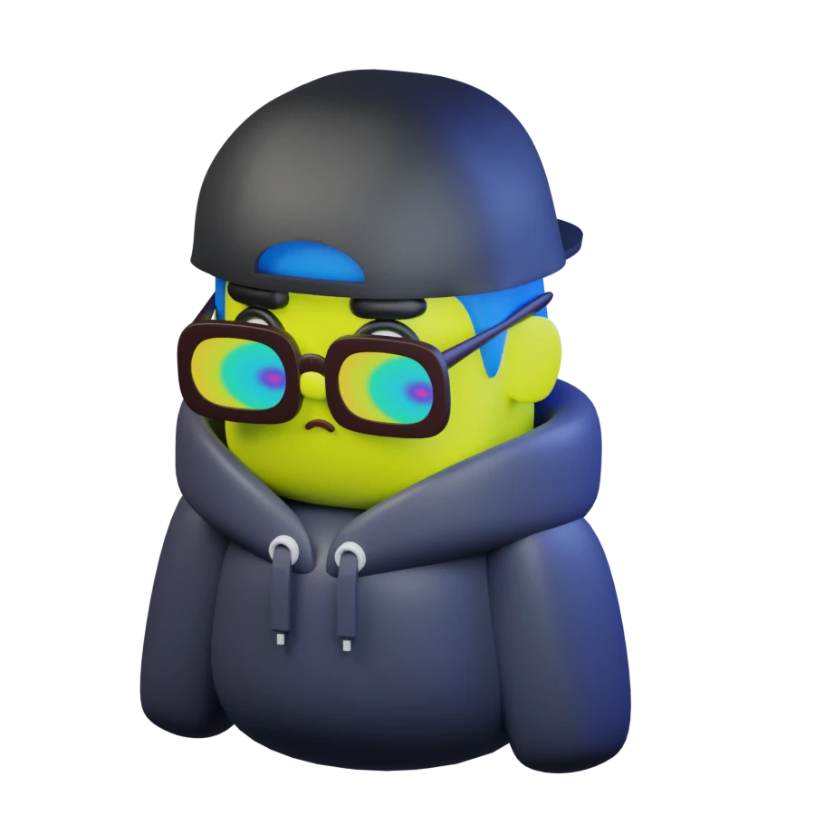
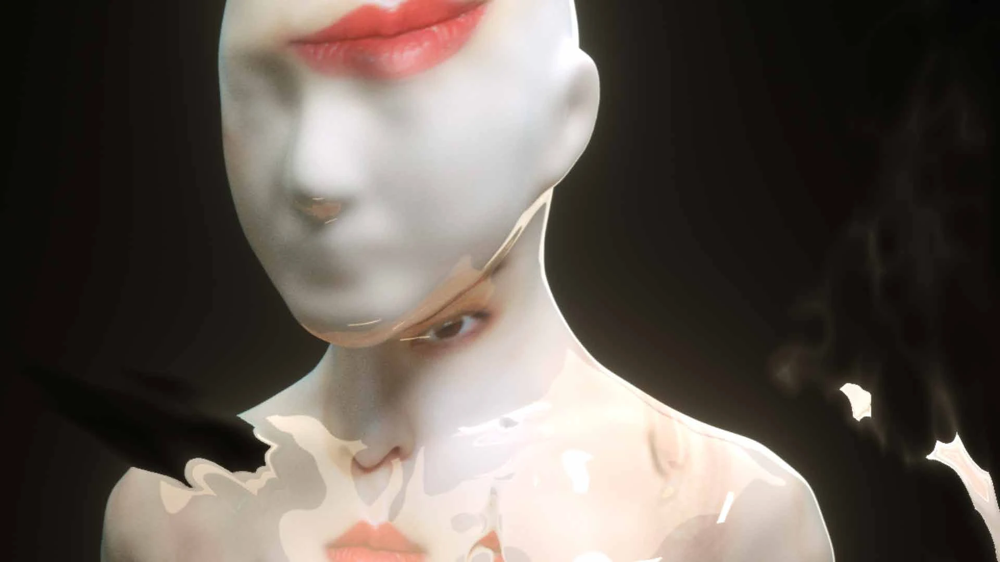
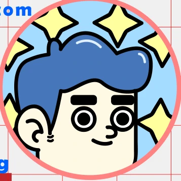

MADE
TO MOVE.
I’m Jingqiang, an animation designer.
I turn ideas into moving images.
For brands, screens, and everything in between.

01 / SELECTED PROJECTS
Serious craft.
Playful outcomes.
From a brand’s first impression
to a stage’s last light.
Selected stills and short loops.
Hover to preview. Tap to explore.

A little strange.
A lot of feeling.
Graphic by instinct. Experimental by nature.
Always looking for the frame you remember.
02 / THE PERSON BEHIND THE PIXELS

HELLO, I’M JINGQIANG. ✳Good ideas deserve
to come alive.
I’m Jingqiang Xie (谢静强), an animation designer working across 2D, 3D, and live visuals. My work moves between commercial storytelling and visual experimentation—from brand films and character animation to music videos and stage visuals.
With a background in Digital Media & Art at Fuzhou University, I bring a hands-on approach to animation, 3D image-making, and compositing. I collaborate with creative teams to give each project its own rhythm and personality.
Brand in motion
Brand films · Product stories · Motion graphics
Characters & worlds
2D animation · 3D visuals · Compositing
Beyond the screen
Stage visuals · Music videos · Visual experiments
After Effects / Cinema 4D / Blender / Photoshop / Illustrator / Premiere Pro
something move.↗
Have a project in mind?
Tell me what you’re imagining.